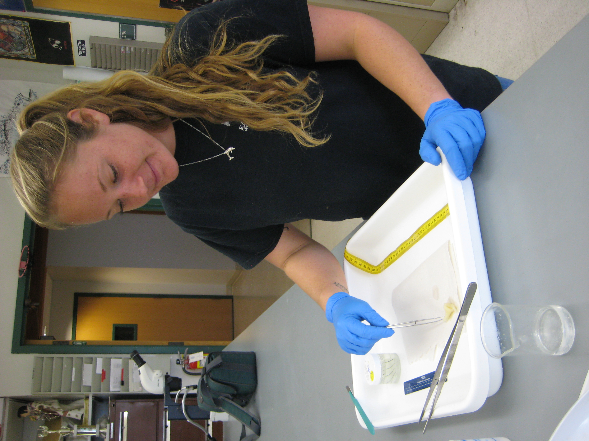

project support
The following individuals assisted with sample collection, laboratory processing, database management, and/or education and outreach activities for one of more projects. Countless volunteers, fishers, and managers have also contributed to various aspects of my work. Check out the PHOTO GALLERY highlighting some of their involvement.


Left: Hallie prepares a CA Halibut ovary for estimating batch fecundity. Center: Helena tries to hold her P. Halibut catch. Right: Sawyer and Zach work through an assembly line of fish stomachs.
Publications and other professional successes would not have been possible without their time and effort!
Alex Aines (2013)Daniel Anaya (2013)
Joshua Antus (2009)
Karen Askeland (2010)
Madison Bargas (2017)
Kaitlyn Beck (2014)
Ellen Bjork (2008)
Sara Briley (2008)
Katie Brown (2016)
Adam Chorazyczewski (2014)
Helena Delgado-Nordmann (2016)
Caitlin Doles (2013)
Danielle Duncan (2013)
Alex Feck (2009)
Amanda Gile (2015)
Chris Giordano (2014)
Hallie Heath (2013-14)
Ashely Hedger (2009)
Elizabeth Hetherington (2009)
Chanelle Hope (2010)
Georgina Hunt (2015)
Zachary Johanson (2016)
Aiden Kamber (2017)
Laura Knopp (2009)
Kristin Kuhn (2008)
Sawyer Link (2016)
Serena Lomonico (2014)
Marianne Mairz (2010)
Rhiannon McCollough (2013)
Paul Muehlenbeck (2012)
Robert Rand (2011-12)
Samantha Robinson (2011)
Kristina Ros (2010)
Marty Schmidt (2012)
Elizabeth Schurig (2013)
Sima Saadat (2010-11)
Nikka Siababa (2014)
Aaron Sloan (2014)
Emily Stollmeyer (2013)
Harmony Wayner (2016-17)
Dani Weir (2009)